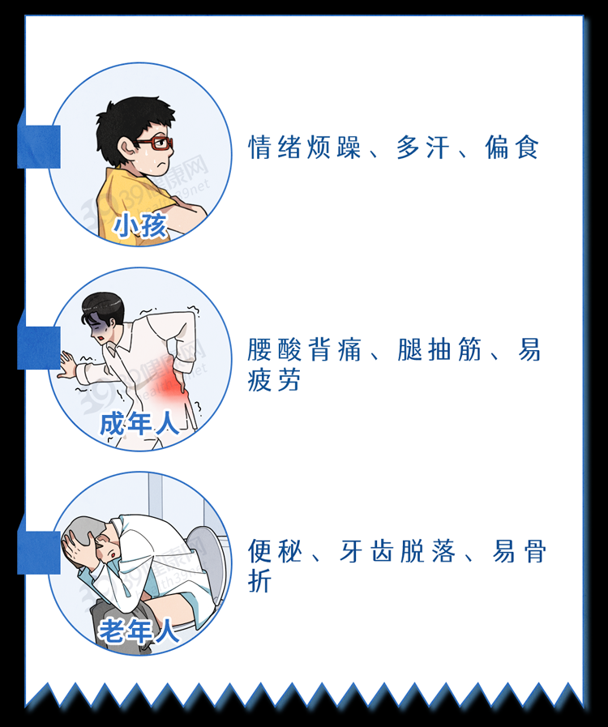

It turns out that bone broth does not supplement calcium? Reminder: Many people do not like to eat the 3 foods that really supplement calcium
-
It turns out that bone broth does not supplement calcium? Reminder: Many people do not like to eat the 3 foods that really supplement calcium
With the improvement of living standards, more and more attention is paid to calcium supplementation. But milk is drunk from morning to night, bone broth is drunk from small to large... After various calcium supplementation operations, many people are still - calcium deficiency is serious. According to the "Report on the Nutrition and Chronic Diseases of Chinese Residents (2020)", the daily calcium intake of adults over 18 years old in China is only 328.3 mg, less than half of the recommended amount (the recommended amount for adults is 800 mg per day).

As an important nutritional element of the human body, calcium is of great significance for forming teeth and bones, maintaining nerve and muscle activity, and promoting blood clotting. In other words, calcium deficiency can affect the health of various organs and tissues in the body.
The harm of calcium deficiency cannot be escaped by three generations of old, middle and young
Infants and young children with calcium deficiency often have symptoms of restlessness, restless sleep, and easy to wake up, because calcium deficiency can easily lead to nervous excitement, thereby inducing sleep problems. Calcium deficiency in adults may cause back pain, leg cramps, fatigue and other problems. The most typical symptoms of calcium deficiency in the elderly are osteoporosis, loose teeth, constipation, and short height.
 Adhering to the idea of "complementing shape with shape", many people feel that bone broth is a good calcium supplement. But in fact, a pot of bone broth boiled over a large fire is very low in calcium, and 1000 ml is only about 16 mg of calcium. Moreover, the calcium in bone broth is not easily soluble in water and is difficult to be absorbed by the body. Therefore, it is not reliable to drink bone broth to supplement calcium, and it is not healthy to drink it regularly. The purine and fatty acid content of old hot soup is high, and drinking too much can easily increase the incidence of high uric acid, high blood pressure and high blood lipids.
Blindly excessive calcium supplementation can also cause a series of problems. Excessive calcium intake will inhibit the absorption of iron, zinc and other minerals, and will also increase the metabolic burden of the kidneys, and the calcium that cannot be absorbed is easy to precipitate to form calcium carbonate and other substances, and kidney stones may find their way to the door in the long run. For older people with decreased gastrointestinal absorption, excessive calcium intake may worsen constipation.